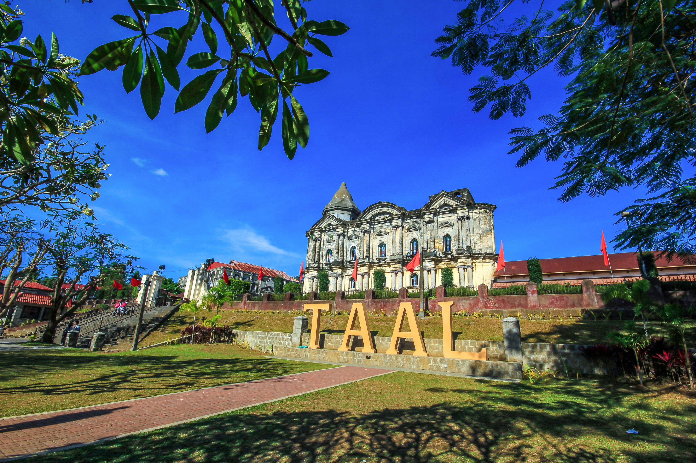
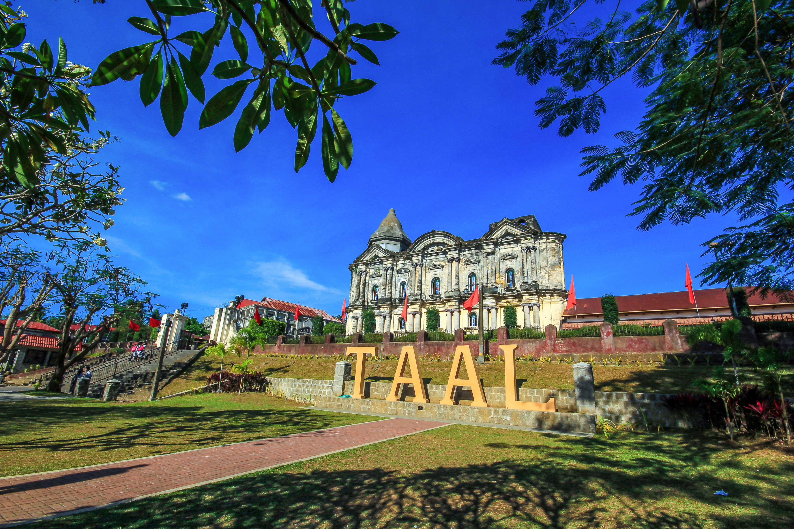

Batangas Tourism
Discover the Beauty of Batangas
Discover the Beauty of Batangas

 


Originally comprised of Occidental Mindoro, Oriental Mindoro, Marinduque and parts of Laguna and Ambos-Camarines and also known as COUMINTAN or KUMINTANG. In 1534, Batangas became the first practically organized province in Luzon and was officially founded in the year 1581. Balayan was the capital of the province for 135 years from 1597- 1732.
Profile of Batangas Province (Geography) Location –> Southern Tagalog Region, Philippines (See map below) Neighboring Provinces –> Cavite, Laguna, and Quezon Capital –> Batangas City Area –> 3,119.75 km2 (1,204.54 sq mi) Population –> 2,694,335 Terrain –> Rolling Hills, Coastal Plains.

The population of Batangas in the 2020 census was 2,908,494 people,with a density of 930 inhabitants per square kilometre or 2,400 inhabitants per square mile.
Tagalogs are the predominant people in Batangas, being the native settlers in the province, distantly followed by Bicolanos, Visayans, Kapampangans, Pangasinenses, and Ilocanos, as well as Maguindanaons, Maranaos, Tausugs and other ethnolinguistic groups from Mindanao.
Batangas also has one of the highest literacy rates in the country at 96.5%, with males having a slightly higher literacy rate at 97.1% than females with 95.9%. Combined average literacy rate is 96%.
Economy of Batangas Province Although many people are still into farming and fishing, agriculture has declined steadily in importance as a source of income in the province. Many farmlands has given way to residential, commercial, and industrial zones. Farm products include rice, corn, sugar, coffee, pineapple, and vegetables.


 Saint Bridget's College Philippines, Batangas
Saint Bridget's College Philippines, Batangas